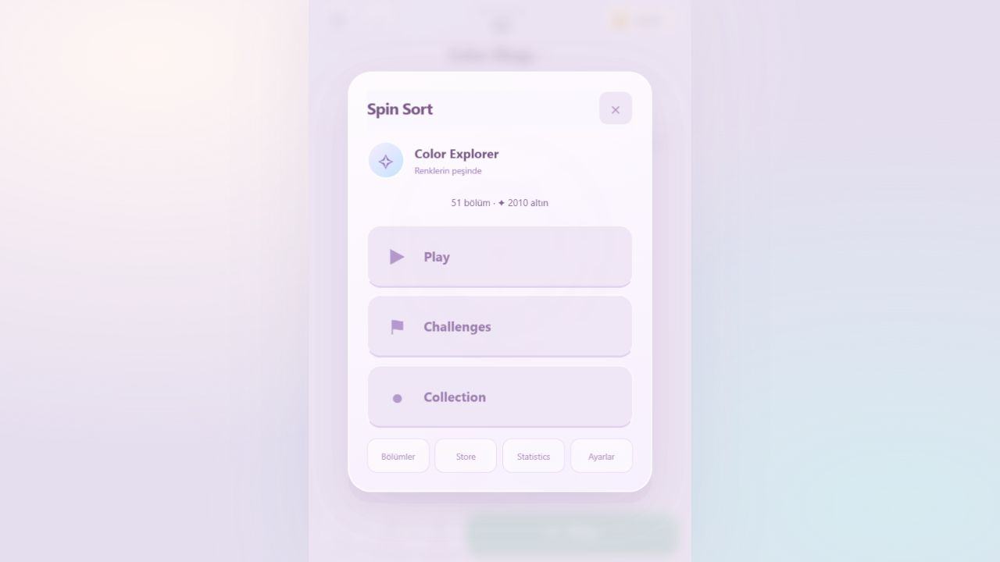
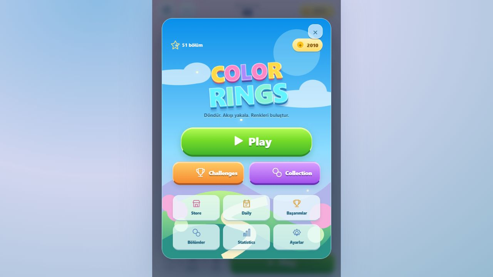
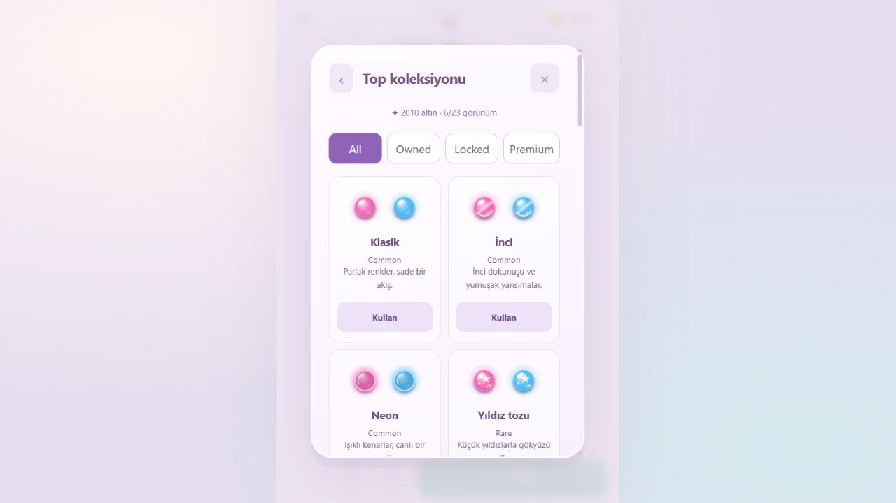
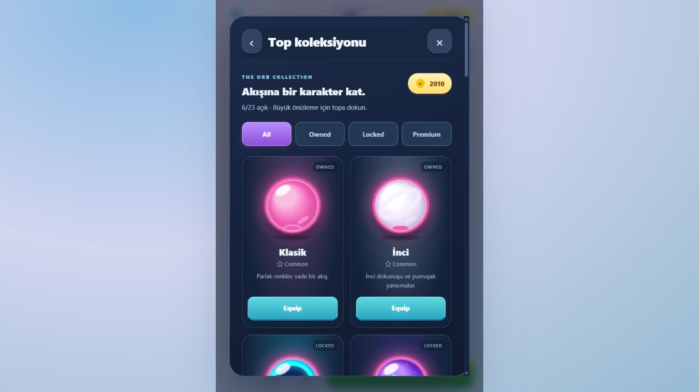
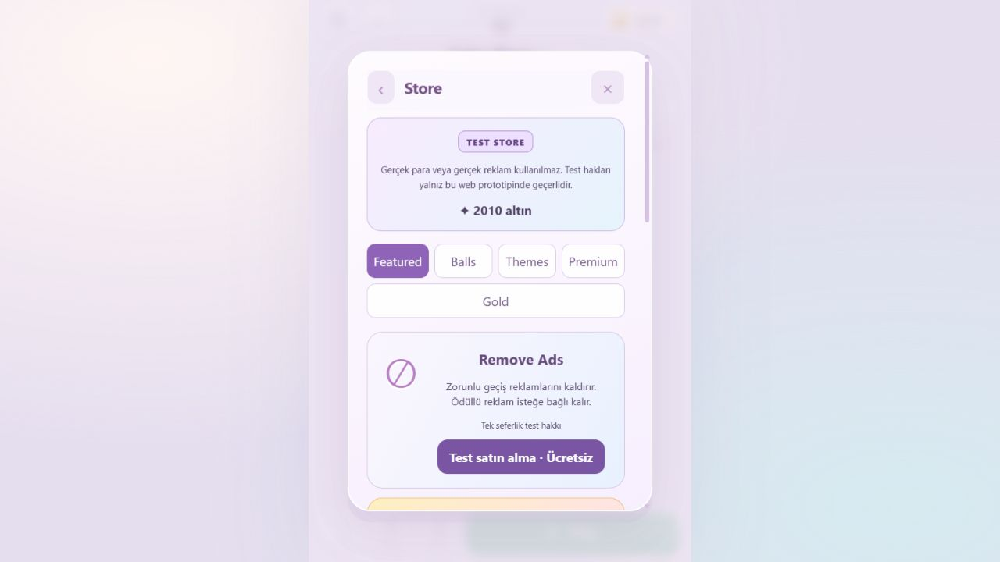
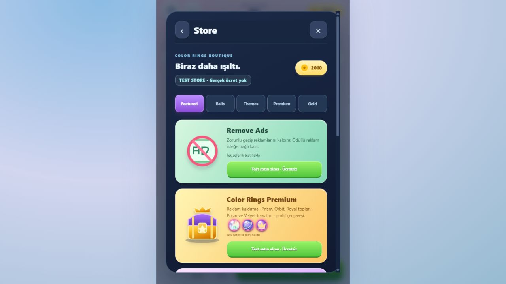
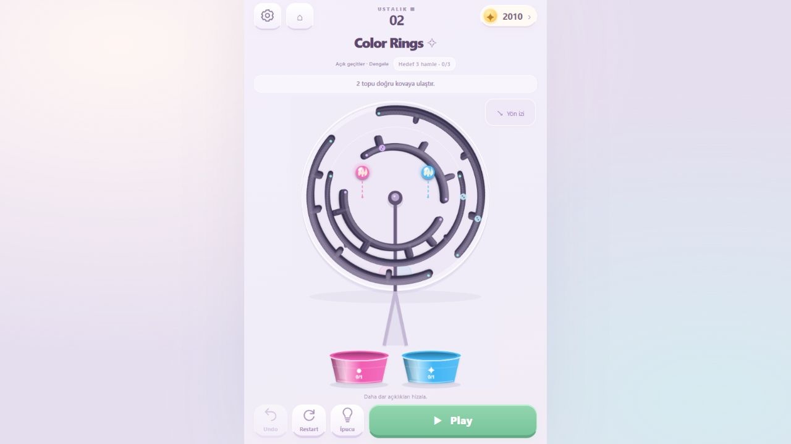
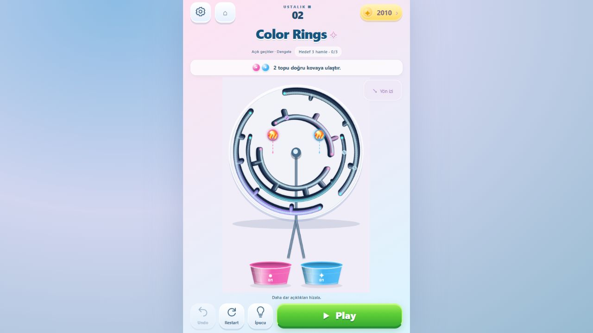

Görseller çalışan uygulamadan alındı. Aynı kayıt, aynı Ustalık 2 bölümü ve aynı masaüstü tarayıcı boyutu kullanıldı. Karşılaştırma panelleri telefon alanını ortalar; tam ekran görüntüsünü görmek için dokun.
Oyunu aç · Referans karşılaştırması ve test raporu · Ayrı test profili







